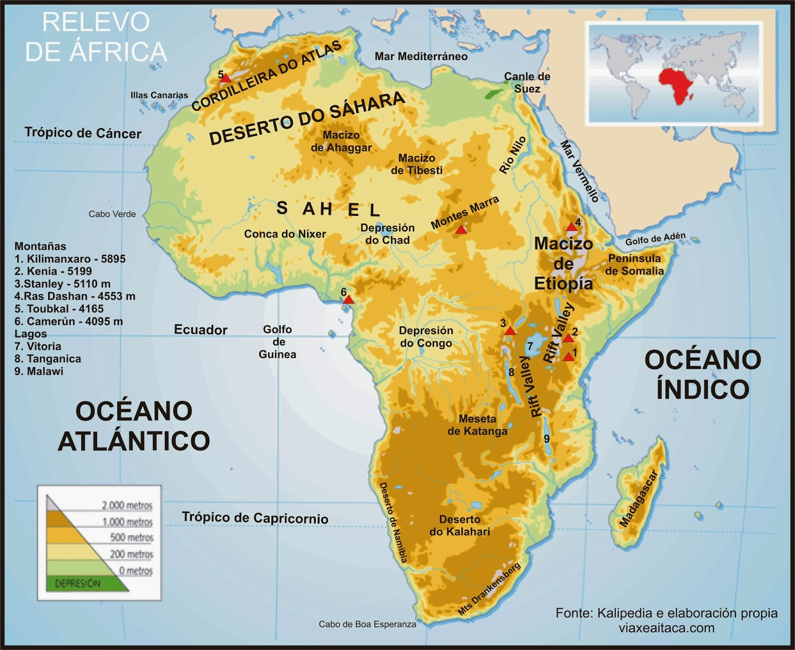
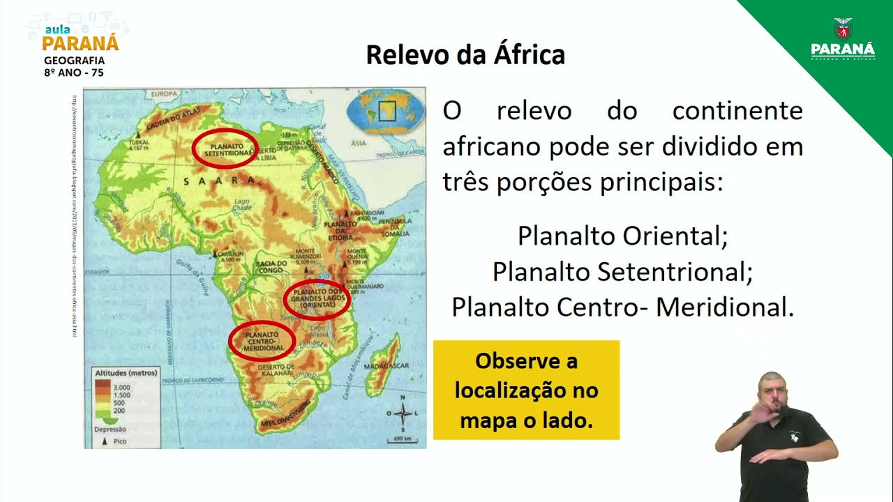

Relevo de África

O continente Africano apresenta em quase todo o seu território,planaltos com, aproximadamente, 750 metros de altitude limitados por escarpas

Na região do deserto do Saara (região setentrional),encontra se o planalto setentrional por onde percorre o Rio nilo. Na região Leste,encontram-se grandes montanhas como o kilimanjaro e o monte Quênia. Já na parte meridional, encontra-se a cadeia de cabo, com uma altitude que ultrapassa 3400 metros.